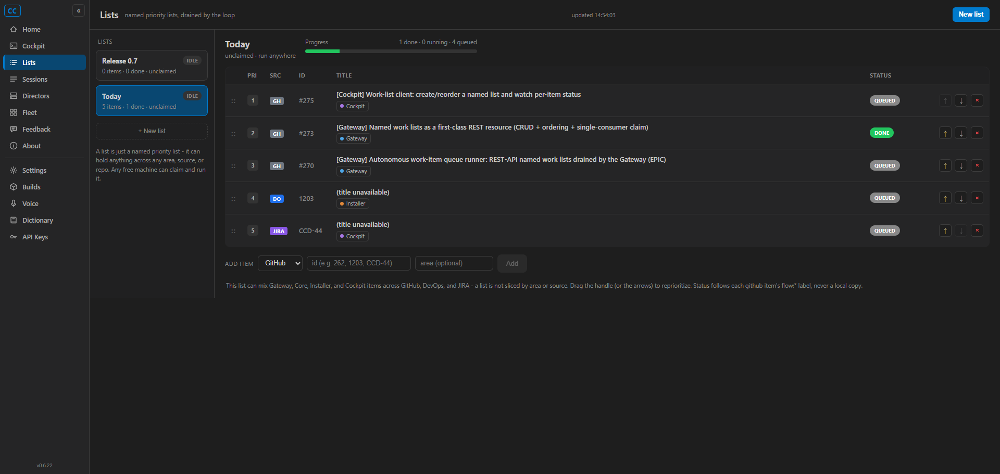
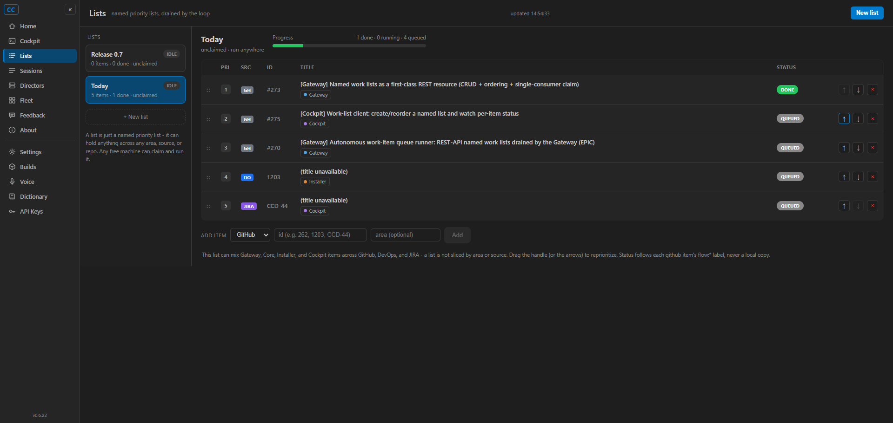
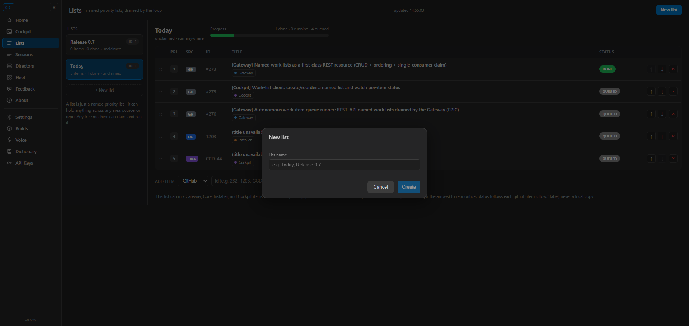
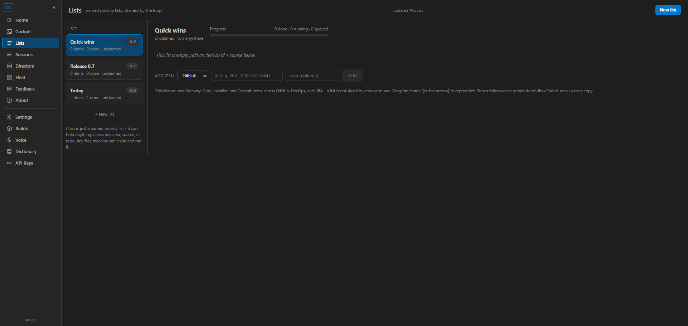
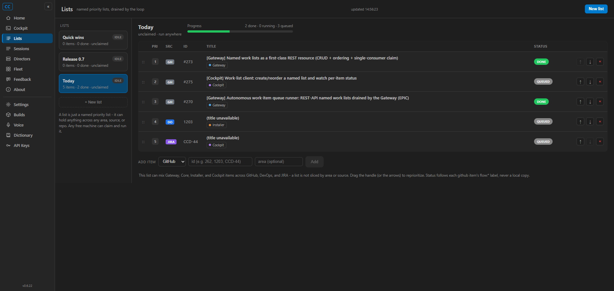
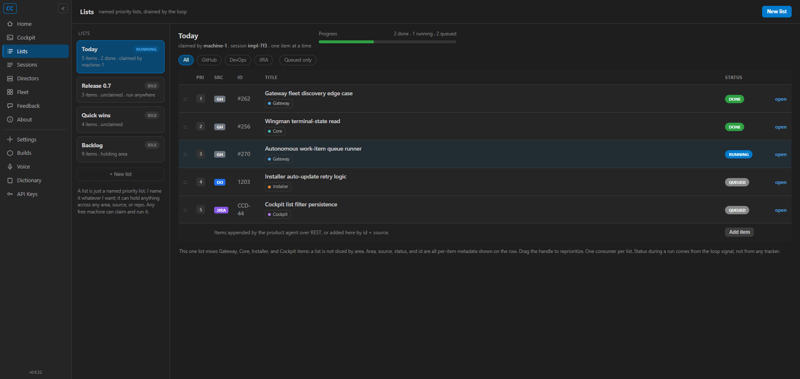

issue-275-cockpit-worklist/lists
REST object - it never keeps its own copy or ordering, and per-item status is derived live from each
github item's flow:* label (never cached). Full solution builds clean (0 warnings, 0 errors)
and 12 new unit tests pass.src/CcDirector.Cockpit/Components/Pages/Lists.razor) routed at
/lists, plus a "Lists" nav-rail entry. Two-column layout matching the canonical mockup:
list-card column (name + RUNNING/IDLE tag + "N items / N done / claimed by") and an items table
(drag handle, priority, source badge, id, title, area chip, status badge, reorder/remove actions).src/CcDirector.Cockpit/Services/GatewayClient.cs):
GetWorkLists / GetWorkList / CreateWorkList / AppendWorkListItem / ReorderWorkListItems /
RemoveWorkListItem - thin calls onto the #273 REST surface. The Cockpit is a CLIENT; every
create/append/reorder/remove goes to the Gateway.src/CcDirector.Cockpit/Services/GitHubItemStatusClient.cs):
resolves each github item's title + status from the GitHub REST API and maps the flow:*
label to a status badge (ASSUMPTION D1). Non-github sources resolve to Queued with no network
call; an unreachable GitHub / missing token yields an explicit Unknown (no silent fallback).WorkItemStatus.cs) and the CSS for the page
(wwwroot/app.css), reusing the existing cockpit tokens + the mockup's source/area/status
colors.src/CcDirector.Cockpit.Tests) pinning the flow-label mapping and the
"non-github = queued, no network call" behaviour.| # | Criterion | Expected | Actual (proof) | Result |
|---|---|---|---|---|
| 1 | Create a named list in the UI; it appears via GET /lists |
UI create writes to the shared Gateway object | Created "Quick wins" in the UI (modal, screenshot 03/04); GET /lists then returned
Quick wins, Release 0.7, Today. | PASS |
| 2 | Append + reorder; new order reflected in GET /lists/{name} |
Reorder issues the child-2 PATCH, not a local-only reorder | Clicked the row "up" arrow on #273; GET /lists/Today changed from
275,273,270,1203,CCD-44 to 273,275,270,1203,CCD-44 (screenshot 02). | PASS |
| 3 | A list created via raw REST appears in the Cockpit identically | Same name, order, per-item source/id/area | "Today" and "Release 0.7" + all 5 items of "Today" were seeded via raw REST and render identically in the Cockpit (screenshots 01-02). | PASS |
| 4 | Row renders source badge + id + area chip + status badge; mixed list; badge follows label change | GH/DO/JIRA badges, area chips, status from flow:* |
"Today" mixes github (#275/#273/#270), devops (1203), jira (CCD-44): GH (gray) / DO (blue) /
JIRA (purple) badges, Cockpit/Gateway/Installer area chips, real github titles. Adding
flow:done to #270 flipped its badge QUEUED -> DONE on refresh (screenshots 01 vs 05),
then reverted. | PASS |
| 5 | No separate cached status that conflicts with the label | Status is always derived, never stored | The list object carries no status field; WorkItemInfo is recomputed from GitHub on
every refresh (ResolveInfoAsync), never persisted. Criterion 4 proved the badge follows
the live label. | PASS |
| 6 | Renders with no active runner; does not error when child 3 absent | queued/done-only lists render cleanly | No runner was running for these tests; empty lists ("Quick wins", "Release 0.7") and the queued/done-only "Today" render without error (screenshots 01, 04). | PASS |
| 7 | Visually matches the canonical mockup + VisualStyle.md | Side-by-side parity | Built page (05) vs mockup (06): same nav rail, list-card column, items table columns, source/area/ status colors, progress strip. Uses the shared cockpit tokens (VS Code dark theme). | PASS |
github #275/#273/#270 with real titles + GH badges, devops 1203 (DO), jira CCD-44 (JIRA); area chips Cockpit/Gateway/Installer; status QUEUED/DONE derived from flow:* labels; progress "1 done / 0 running / 4 queued".

#273 moved to priority 1 via the UI; GET /lists/Today confirmed the new order in the shared object.



After gh issue edit 270 --add-label flow:done, #270's badge flipped QUEUED -> DONE on the next
refresh; progress updated to "2 done / 0 running / 3 queued". The label was reverted afterward.


dotnet build cc-director.sln
Build succeeded.
0 Warning(s)
0 Error(s)
dotnet test src/CcDirector.Cockpit.Tests
Passed! - Failed: 0, Passed: 12, Skipped: 0, Total: 12
No architecture or security drift. This is a pure client UI: it adds a Cockpit page that consumes the
existing Gateway /lists REST surface (#273, already in architecture_manifest.yaml) and
reads public GitHub issue metadata. No new container, no new trust boundary, no new secret handling beyond
reading GITHUB_TOKEN from the existing credentials.env at point of use (same pattern as
the implementation backend). No docs/cencon/ file needs updating.